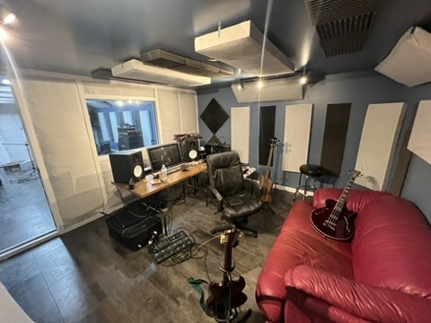
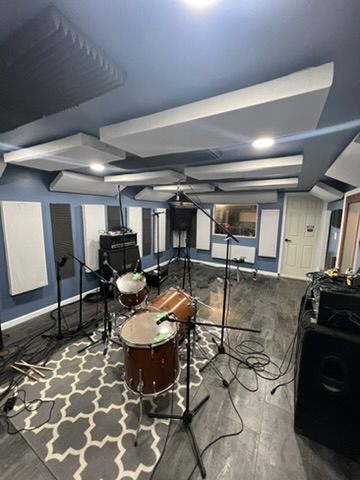

About
Data by day, noise by night.
I'm a data professional in Indianapolis who has spent the last eight years turning messy financial data into answers — first for the biggest retail landlord in the country, now for enterprise SaaS customers at Zylo, where I work as an Associate AI Scientist automating the boring parts of contract and revenue data.
When I'm not building pipelines, I'm in the studio. I write, record, and release music with my band Brenderlin, produce and engineer for other artists, shoot music videos, and take on way too many DIY projects around the house.
I also shoot photos — @corbincombsphotography — and cut the occasional travel film on my personal YouTube.
Currently: Associate AI Scientist @ Zylo · Member & co-writer in Brenderlin · Producer/engineer for Idiotic Oddity & Kantankerous · Guitar & vocals in Stiltz, 123 Not It! & Breezeblocks
Music
Brenderlin.
A pretty alright band from Indianapolis, IN. Home-recorded, self-released, and louder than the neighbors would prefer. "RIP Wade Boggs" — out now everywhere.
RIP Wade Boggs — official music video
Stream Brenderlin on Spotify
Highlights
- RIP Wade Boggs single · 2024
- Background Noise EP · 2025
- I'm In Lesbians With You from the vault
- "You Miss 100% of the Shots You Don't Take" — Wayne Gretzky — Michael Scott from the vault
Recording
The home studio.
Everything I make is recorded, produced, and mixed at home — my own bands and other people's, from punk covers to rap records. Even the room is a DIY project: built out by hand and currently in its second remodel.
- Produced, engineered, mixed & mastered: all of Idiotic Oddity's music, plus the beats and full production for Kantankerous.
- Recorded, mixed & mastered: Stiltz, Breezeblocks, and Not Broke Just Bent.
- Mixed & mastered: Idiotic Oddity's Safely Eject Your Flash Drive (SEYFD).


Production & past bands
Beyond Brenderlin.
A decade of bands, beats, and behind-the-scenes work. Everything below is on streaming services; the bands have videos on YouTube.
Idiotic Oddity
Produced every song · Co-wrote the albums · Mixed & mastered Safely Eject Your Flash Drive (SEYFD)
Shot the music videos for "Hold Close," "Bounty Sheet," "Mascot," and "Ooh LaLa" · Animated "Merry Christmas, I'm Really Sorry"
Trash Biscuit
Bass · Co-writer
Self-titled album (2022) and demos (2021).
Kantankerous
Beats, engineering, production, mixing & mastering — all of it
Full-service production for the artist, end to end.
Stiltz
Guitar & vocals · Recorded, mixed & mastered
Punk pop from Indy — covers, originals, and live performances. Live videos shot at the Hoosier Dome.
123 Not It!
Guitar & vocals
Homegrown Indy originals and covers.
Stiltz, live at the Hoosier Dome
More live footage and covers live on my personal YouTube.
Career
A decade of data.
Associate AI Scientist — Zylo
- Researching and implementing automated pipelines to extract key metadata from customer SaaS contracts (Azure Document Intelligence, AWS Bedrock, Textract).
- Automating tedious tasks with Python (Pandas, Requests, Ollama) and JavaScript (Node.js, Electron).
Senior Data Analyst — Zylo
- Cut team ticket resolution from 10 business days to 5 as owner of the ticket backlog.
- Updated Python ETLs importing large sets of customer financial data; rebuilt benchmark updates from SaaS contracts.
- Created and maintained SQL reports so Customer Success could track key insights per customer.
Data Analyst — Zylo
- Built an algorithm that consistently matches SaaS transactions from financial data, saving the team ~10 hours a week.
- Automated data processing with Python; extracted key metadata from SaaS contracts; validated customer financial data end to end.
Data Analyst — Simon Property Group
- Delivered company-wide insights to the CEO and executives for quarterly earnings calls.
- Reported monthly on sales & occupancy performance; wrote and tested Power BI and SQL (Yardi) reports.
Senior Tenant Account Analyst — Simon Property Group
- Month-end team lead; reported on key metrics for REIT, Mills, Premium Outlets, and local tenants.
- Reconciled tenant balances, resolved escalated accounts, and trained new analysts.
- Wrote and edited Cognos reports and CTI queries; tracked variances across Cognos, CTI, and JDE.
Safety Director & Dispatcher — S&H Transportation
- Managed driver logs and compliance, implemented a new electronic logging system, and ran terminal operations.
- Previously dock supervisor: organized the yard, dispatched loads, and troubleshooted driver issues.
Tutor — Wyzant
- Tutored C/C++, HTML, CSS, JavaScript, Calculus, Physics, and Chemistry.
Data Entry Specialist — Indiana University Health
- Wrote Visual Basic macros in Excel and Word, built PDF forms with JavaScript in Acrobat, and trained new employees.
Skills & tools
Travel
Where the camera went.
Every dot is a real place I've shot from — pulled straight from the geotagged macOS Photos library, sized by how many photos I took there.
Dots sized by photo count · click a dot for details · data from the Photos library
Around the house
DIY projects.
When I'm not in front of a terminal or a studio console, I'm usually breaking something in the house to learn how to fix it.
Project 1 — (edit me)
What you did, how it went, and what you'd never do again.
Project 2 — (edit me)
What you did, how it went, and what you'd never do again.
Home studio build
Built the room out by hand — treated, wired, and furnished. Second remodel is in progress, with new photos coming.
Project 3 — (edit me)
What you did, how it went, and what you'd never do again.